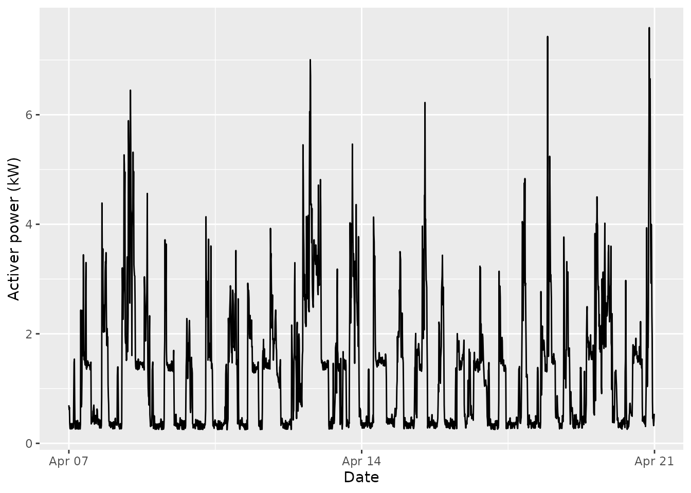
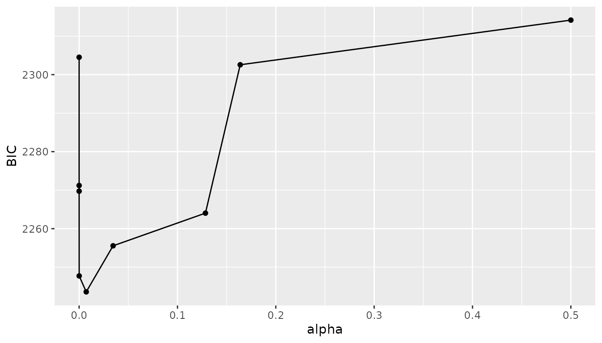
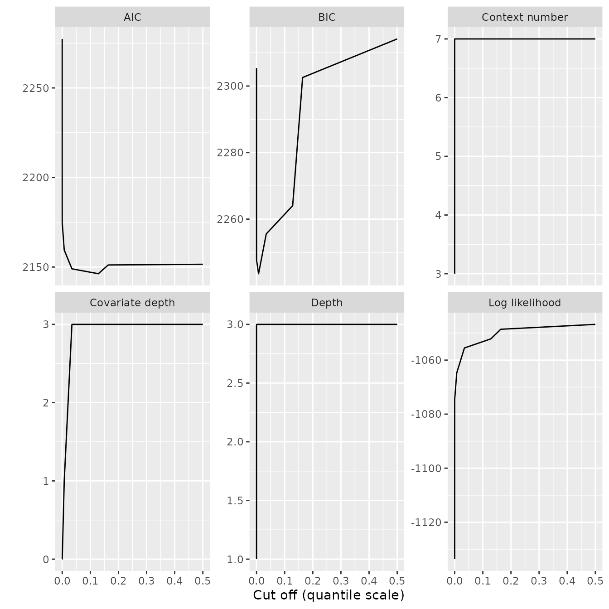

Limitations of Variable Length Markov Chains
Variable Length Markov Chains (VLMC) are very useful to capture complex structures in discrete time series as they can mix short memory with long memory in a contextual way, leading to sparse models.
However, they cannot capture the influence of exogenous variables on the behaviour of a time series. As a consequence, a VLMC adjusted on sequences influenced by covariates could fail to capture interesting patterns.
A typical example
Let us focus again on the electrical usage data set used in the package introduction, using the following two weeks of data:
pc_week_15_16 <- powerconsumption[powerconsumption$week %in% c(15, 16), ]
elec <- pc_week_15_16$active_power
ggplot(pc_week_15_16, aes(x = date_time, y = active_power)) +
geom_line() +
xlab("Date") +
ylab("Activer power (kW)")
We build again a discrete time series using the following thresholds:
- low active power at night (typically below 0.4 kW);
- standard use between 0.4 and 2 kW;
- peak use above 2 kW.
Adjusting a VLMC to this sequence gives the following model (using BIC for model selection):
elec_vlmc_tune <- tune_vlmc(elec_dts)
best_elec_vlmc <- as_vlmc(elec_vlmc_tune)
draw(best_elec_vlmc)
#> * (0.3269, 0.4841, 0.189)
#> +-- low (0.8088, 0.1821, 0.009105)
#> '-- typical (0.1292, 0.8041, 0.06667)
#> | +-- low (0.3667, 0.5833, 0.05)
#> | '-- typical (0.1022, 0.8365, 0.0613)
#> | '-- low (0.4058, 0.5507, 0.04348)
#> '-- high (0, 0.1864, 0.8136)Considering the apparent regularity of the time series, one may wonder whether this model is really capturing the dynamics of power electricity consumption. In particular the longest memory of 3 time steps, i.e., 30 minutes, may seem a bit short compared to the somewhat long periods of stability.
Theoretical aspects
VLMC with covariates have been introduced in Variable length Markov chain with exogenous covariates. The core idea is to enable the conditional probabilities of the next state given the context to depend on exogenous covariates.
Variable memory
A COVLMC models a pair of sequences. The main sequence is denoted \(\mathbf{X}=X_1, X_2, \ldots, X_n, \ldots\). The random variables take values in a finite state space \(S\) exactly as in a standard VLMC. We have in addition another sequence of random variables \(\mathbf{Y}=Y_1, Y_2, \ldots, Y_n, \ldots\) which take values in \(\mathbb{R}^p\). This latter assumption \(Y_l\in \mathbb{R}^p\) is can be relaxed to more general spaces.
A COVLMC puts restriction on the conditional probabilities of \(X_n\) given the past of both sequences. To simplify the presentation, we denote \(X^k_l\) the sequence of random variables \[ X^k_m=(X_k, X_{k-1}, \ldots, X_m), \] and we use similar notations for the values taken by the variables \(x^k_m\), as well as for \(Y^k_m\) and \(y^k_m\). We use here the traditional reverser ordering in which \(X_k\) is the more recent variable and \(X_m\) the oldest.
A pair of sequences \(\mathbf{X}\) and \(\mathbf{Y}\) is a COVLMC if there is a maximal order \(l_{\max}\) and a function \(l\) from \(S^{l_{\max}}\) to \(\{0,\ldots,l_{\max}\}\) such that for all \(n>l_{\max}\) \[ \begin{multline} \mathbb{P}(X_n=x_n\mid X^{n-1}_1=x^{n-1}_1, Y^{n-1}_1=y^{n-1}_1)=\\ \mathbb{P}\left(X_n=x_n\mid X^{n-1}_{n-l\left(x^{n-1}_{n-l_{\max}}\right)}=x^{n-1}_{n-l\left(x^{n-1}_{n-l_{\max}}\right)}, Y^{n-1}_{n-l\left(x^{n-1}_{n-l_{\max}}\right)}=y^{n-1}_{n-l\left(x^{n-1}_{n-l_{\max}}\right)}\right). \end{multline} \] As in VLMC, the \(\mathbf{X}\) process has a finite and variable memory, but this memory applies to both \(\mathbf{X}\) and \(\mathbf{Y}\). Notice that the memory order depends only on \(\mathbf{X}\) and that no assumptions are made on the temporal behaviour of \(\mathbf{Y}\). Thus a COVLMC on \(\mathbf{X}\) and \(\mathbf{Y}\) is not a VLMC on the pair \((\mathbf{X}, \mathbf{Y})\) (which can make sense if \(\mathbf{Y}\) is discrete).
As for VLMC, the memory length function generates a context function \(c\) which keeps in the past the part needed to obtain the conditional distribution: \(c\) is a function from \(S^{l_{\max}}\) to \(\bigcup_{k=0}^{l_{\max}}S^k\) given by \[ c(x^{n-1}_{n-l_{\max}})=x^{n-1}_{n-l\left(x^{n-1}_{n-l_{\max}}\right)} \] The image by \(c\) of \(S^{l_{\max}}\) is the set of contexts of the COVLMC which is entirely specified by \(l\) and one conditional distribution by unique context.
As the notations are somewhat opaque at first, we can illustrate the
definition with a simple example. We consider a binary sequence (values
in \(S=\{0, 1\}\)) and a single
numerical covariate \(Y_t\in\mathbb{R}\). As in the theoretical
example in vignette("variable-length-markov-chains") we
assume that \(l_{\max}=3\) and that
\(l\) is given by \[
\begin{align*}
l(0, a, b)&=1&\forall a, \forall b,\\
l(1, 1, c)&=2&\forall c,\\
l(1, 0, 0)&=3,&\\
l(1, 0, 1)&=3.&\\
\end{align*}
\] In practice the COVLMC is therefore fully described by
specifying the following probabilities: \[
\begin{align*}
\mathbb{P}(X_t=1\mid& X_{t-1}=0, Y_{t-1}=y_{t-1})\\
\mathbb{P}(X_t=1\mid& X_{t-1}=1, X_{t-2}=1, Y_{t-1}=y_{t-1},
Y_{t-2}=y_{t-2})\\
\mathbb{P}(X_t=1\mid& X_{t-1}=1, X_{t-2}=0, X_{t-3}=0,
Y_{t-1}=y_{t-1}, Y_{t-2}=y_{t-2}, Y_{t-3}=y_{t-3})\\
\mathbb{P}(X_t=1\mid& X_{t-1}=1, X_{t-2}=0, X_{t-3}=1,
Y_{t-1}=y_{t-1}, Y_{t-2}=y_{t-2}, Y_{t-3}=y_{t-3})
\end{align*}
\]
Conditional distributions
The main difficulty induced by COVLMC compared to VLMC is the specification of the conditional distributions. Indeed the conditional distributions depend on \(\mathbf{Y}\) and cannot simply be given by a table. For instance, in the example above, we need to specify, among others, \(\mathbb{P}(X_t=1\mid X_{t-1}=0, Y_{t_1}=y_{t-1})\), for each all values of \(y_{t-1}\in \mathbb{R}\) (in \(\mathbb{R}^p\) in the general case).
A natural choice in this particular example is to use a logistic model, i.e. to assume \[ \mathbb{P}(X_t=1\mid X_{t-1}=0, Y_{t_1}=y_{t-1})=g(\alpha^0+y_{t-1}\beta_1^0), \] with \(g(t)=\frac{1}{1+\exp(-t)}\) is the logistic function. The superscript on \(\alpha^0\) and \(\beta^0_1\) refer to the context, here \(0\), while the subscript on \(\beta^0_1\) refers to the time delay (here \(1\)). By extension, we have for example \[ \begin{multline*} \mathbb{P}(X_t=1\mid X_{t-1}=1, X_{t-2}=1, Y_{t_1}=y_{t-1}, Y_{t_2}=y_{t-2})=\\ g\left(\alpha^{1,1}+y_{t-1}\beta^{1,1}_1+y_{t-2}\beta^{1,1}_2\right). \end{multline*} \]
More generally, the probability distribution associated to a context
could be given by any function that maps the values of the covariates to
a distribution on \(S\), the state
space. Following the original paper,
mixvlmc uses multinomial logistic regression as implemented
by VGAM::vglm() or nnet::multinom(), or a
logistic regression provided by stats::glm() for state
spaces with only 2 states. This has several advantages over a more
general solution:
- during the estimation phase, one probability distribution is estimated for each relevant context: this could induce a large computational burden for more complex models than multinomial logistic ones;
- having a simple model enables to fit contexts with limited number of occurrences which is important to allow searching for long term dependencies;
- logistic models with different memory order are easy to compare using a likelihood-ratio test.
The last point is used in mixvlmc (as in the original
paper) to simplify local models with respect to the covariates. For a
context of length \(l\), the
probability distribution is assumed to depend on the \(l\) past values of \(\mathbf{Y}\) but in practice we allow a
dependency to only \(k<l\) past
values. For instance, we could have \[
\mathbb{P}(X_t=1\mid X_{t-1}=1, X_{t-2}=1, Y_{t_1}=y_{t-1},
Y_{t_2}=y_{t-2})=g\left(\alpha^{1,1}+y_{t-1}\beta^{1,1}_1\right).
\]
Beta-Context algorithm
Estimating a COVLMC model from two time series is more complex than
estimating a VLMC model. mixvlmc implements the
Beta-Context algorithm proposed in the original paper. It is inspired from
the context algorithm used for VLMC (and proposed in Variable length Markov
chains). It can be summarized as follows:
- the first step consists in building a context tree (see
vignette("context-trees")) from the \(\mathbf{X}\) discrete sequences, almost exactly as for a VLMC: the only difference is that to be kept in the tree a context must appear a number of times that depends on its length, on the dimension of the covariates and on the number of states. This guarantees a minimal number of observations for the (maximum likelihood) estimation of the context dependant multinomial logistic regression. - the second step is an estimation one: a multinomial logistic regression model is estimated for each context, using a number of past values of \(\mathbf{Y}\) equal to the length of the context.
- the rest of the algorithm consists in pruning the context tree and
the logistic models:
- leaf contexts are first assessed in terms of model simplification. The likelihood-ratio test is used to decide whether the oldest value of \(\mathbf{Y}\) is relevant or not. Essentially we compare e.g. \(g\left(\alpha^{1,1}+y_{t-1}\beta^{1,1}_1\right)\) to \(g\left(\alpha^{1,1}+y_{t-1}\beta^{1,1}_1+y_{t-2}\beta^{1,1}_2\right)\) as an estimator of \(\mathbb{P}(X_t=1\mid X_{t-1}=1, X_{t-2}=1, Y_{t_1}=y_{t-1}, Y_{t_2}=y_{t-2})\);
- based on the results of those tests, it may be possible to completely remove a context from the tree, see the paper for details.
This last pruning phase is carried out repeatedly as context removals turn internal contexts into leaves that can then be further simplified.
COVLMC in practice
Estimation
COVLMC estimation is provided by the covlmc() function.
We build first a simple example data set as follows:
set.seed(0)
nb_obs <- 200
covariates <- data.frame(y = runif(nb_obs))
x <- 0
for (k in 2:nb_obs) {
## we induce a simple dependency to the covariate
## and an order 1 memory
if (covariates$y[k - 1] < 0.5) {
if (x[k - 1] == 0) {
x[k] <- sample(c(0, 1), 1, prob = c(0.7, 0.3))
} else {
x[k] <- sample(c(0, 1), 1, prob = c(0.3, 0.7))
}
} else {
if (x[k - 1] == 0) {
x[k] <- sample(c(0, 1), 1, prob = c(0.1, 0.9))
} else {
x[k] <- sample(c(0, 1), 1, prob = c(0.5, 0.5))
}
}
}Then we estimate a COVLMC as follows:
model <- covlmc(x, covariates)
model
#> VLMC with covariate context tree on 0, 1
#> cutoff in quantile scale: 0.05
#> Number of contexts: 2
#> Maximum context length: 1The estimation process is controlled by three parameters:
-
max_depth: the largest order/memory considered for the COVLMC (defaults to 100). This parameter is essentially a computational burden control parameter. It does not play a major role in COVLMC estimation because of the constraints imposed bymin_size. The default value is very conservative; -
min_size: this parameter controls the minimal number of occurrences needed for a context to be included in the initial context tree. It gives the number of occurrences per parameter of the logistic model which depends on both the length of the context, the dimension of the covariates and the number of states; -
alpha: is the parameter of the pruning process of the Beta-Context algorithm. Pruning decisions are all based on likelihood ratio tests andalphais the common level of all those tests.
The default parameters work well on the previous example, as shown by the obtained model:
draw(model, model = "full", p_value = FALSE)
#> *
#> +-- 0 ([ (I) y_1
#> | -2.951 6.236 ])
#> '-- 1 ([ (I) y_1
#> 1.719 -1.881 ])The model has 2 contexts, 0 and 1, as expected. The logistic models are described by their parameters. For context 0, the intercept is negative and the coefficient of \(y_{t-1}\) is positive: the probability of switching to 1 is small when \(y_{t-1}\) is small and increases with \(y_{t-1}\). For context 1, the situation is reversed and the effect of \(y_{t-1}\) is smaller. This is consistent with the way the series were constructed.
Notice however that obtained an interesting model with the default parameters should not be seen as a general property and proper model choice must be implemented.
Model choice
As COVLMC estimation fits a potentially large number of logistic models to the data, the use of a penalized likelihood approach is recommended to set its parameters and avoid overfitting.
However, model choice is more complex in the case of the COVLMC than
for VLMC. In particular, the pair
cutoff()/prune() does not work as well for
COVLMC than for VLMC (see
vignette("variable-length-markov-chains")). Indeed the
pruning process of the Beta-Context algorithm is such that its effects
cannot be predicted as easily as the ones of the Context algorithm. In
practice, computing the largest alpha (test level) that is
guaranteed to make a minimal but actual pruning of a given COVLMC is
easy. But subsequent cut off values could be misleading. To avoid any
problem it is therefore recommended to rely on the
tune_covlmc() function that has been designed to explore
the full “pruning space” associated to a given data set.
Used on the artificial example above, it gives:
model_tune <- tune_covlmc(x, covariates)
model_tune
#> VLMC with covariate context tree on 0, 1
#> cutoff in quantile scale: 0.1236
#> Number of contexts: 2
#> Maximum context length: 1
#> Selected by BIC (245.1046) with likelihood function "truncated" (-112.3135)and
draw(as_covlmc(model_tune), model = "full", p_value = FALSE)
#> *
#> +-- 0 ([ (I) y_1
#> | -2.951 6.236 ])
#> '-- 1 ([ (I) y_1
#> 1.719 -1.881 ])The resulting model is the same as the one obtained before but it was properly obtained by minimising the BIC.
As for tune_vlmc(), the max_depth parameter
is automatically increased to avoid using it inadvertently as a
regularisation parameter. However, while min_size is
generally considered as not having a major influence on the model
selection for VLMC, this is not the case for COVLMC. There is currently
no support in mixvlmc for an automatic choice of
min_size and one should therefore test several values and
compare the obtained BIC/AIC. In the articial case, we can try for
instance min_size=2 as follows:
model_tune_2 <- tune_covlmc(x, covariates, min_size = 2)
model_tune_2
#> VLMC with covariate context tree on 0, 1
#> cutoff in quantile scale: 0.01195
#> Number of contexts: 2
#> Maximum context length: 1
#> Selected by BIC (242.3184) with likelihood function "truncated" (-112.3135)and min_size=10 as follows:
model_tune_10 <- tune_covlmc(x, covariates, min_size = 10)
model_tune_10
#> VLMC with covariate context tree on 0, 1
#> cutoff in quantile scale: 0.1236
#> Number of contexts: 2
#> Maximum context length: 1
#> Selected by BIC (245.6423) with likelihood function "truncated" (-112.3135)Here we see no particular effect of the parameter because of the simplicity of the problem.
Let us now come back to the electricity consumption example described above. We introduce a very basic day/night covariate as follows:
elec_cov <- data.frame(day = (pc_week_15_16$hour >= 7 & pc_week_15_16$hour <= 18))and fit a COVLMC with
elec_tune <- tune_covlmc(elec_dts, elec_cov)
elec_tune
#> VLMC with covariate context tree on low, typical, high
#> cutoff in quantile scale: 0.007218
#> Number of contexts: 7
#> Maximum context length: 3
#> Selected by BIC (2243.59) with likelihood function "truncated" (-1064.74)The model selection process can be represented graphically as follows:
ggplot(elec_tune$results, aes(x = alpha, y = BIC)) +
geom_line() +
geom_point()
or automatically using e.g. autoplot() as follows:

The final model is:
draw(as_covlmc(elec_tune), model = "full", p_value = FALSE, with_state = TRUE)
#> *
#> +-- low ([ (low) | (I)
#> | typical | -1.491
#> | high | -4.487 ])
#> '-- typical
#> | +-- low ([ (low) | (I)
#> | | typical | 0.4643
#> | | high | -1.992 ])
#> | '-- typical
#> | | +-- low ([ (low) | (I)
#> | | | typical | 0.3054
#> | | | high | -2.234 ])
#> | | '-- typical ([ (low) | (I) day_1TRUE
#> | | | typical | 1.839 0.975
#> | | | high | -0.1823 -0.1462 ])
#> | | '-- high ([ (low) | (I)
#> | | typical | 2.773
#> | | high | 0.8473 ])
#> | '-- high ([ (low) | (I)
#> | typical | 3.367
#> | high | 1.705 ])
#> '-- high ([ (typical) | (I)
#> high | 1.474 ])It shows some interesting patterns:
- one of the logistic model is degenerate: in the
highcontext, no transition to alowcontext can happen. This was already observed with the VLMC; - the only dependency with respect to the covariate is in the context typical, typical, typical. In this case, the probability to stay in the typical context is increased during day time and decreased (but to a lesser extent) during the night. In practice, this means that the model is able to generate longer sequences that stay in the typical state during the day than at night.
Notice finally that for this real world example, the
min_size parameter has some influence on the results.
Setting it to a smaller value does not change the final model, as shown
below:
elec_tune_3 <- tune_covlmc(elec_dts, elec_cov, min_size = 3)
elec_tune_3
#> VLMC with covariate context tree on low, typical, high
#> cutoff in quantile scale: 0.007218
#> Number of contexts: 7
#> Maximum context length: 3
#> Selected by BIC (2239.393) with likelihood function "truncated" (-1064.74)However, increasing the parameter to, e.g., 10 generates a simpler but weaker model as show here:
elec_tune_10 <- tune_covlmc(elec_dts, elec_cov, min_size = 10)
elec_tune_10
#> VLMC with covariate context tree on low, typical, high
#> cutoff in quantile scale: 0.03454
#> Number of contexts: 5
#> Maximum context length: 2
#> Selected by BIC (2260.505) with likelihood function "truncated" (-1088.409)Diagnostics
The package provides numerous ways to analyse a COVLMC. asic functions include
-
states()returns the state space of the model; -
depth()returns the length of the longest context in the model; -
covariate_depth()returns the longest memory used by the model with respect to covariates; -
context_number()returns the number of contexts in the model.
For instance, the large model obtained above has the following characteristics:
elec_model <- as_covlmc(elec_tune)
states(elec_model)
#> [1] low typical high
#> Levels: low typical high
depth(elec_model)
#> [1] 3
covariate_depth(elec_model)
#> [1] 1
context_number(elec_model)
#> [1] 7VLMC objects support classical statistical functions such as:
Contexts
The model can be explored in details by drawing its context tree (see
vignette("context-trees") for details) as follows:
draw(elec_model)
#> * (merging (low and high): 8.121e-230)
#> +-- low (0.03454 [ -1.491
#> | -4.487 ])
#> '-- typical (merging (low and high): 8.264e-09)
#> | +-- low (0.8447 [ 0.4643
#> | | -1.992 ])
#> | '-- typical (collapsing: 3.961e-10)
#> | | +-- low (0.2323 [ 0.3054
#> | | | -2.234 ])
#> | | '-- typical (6.269e-05 [ 1.839 0.975
#> | | | -0.1823 -0.1462 ])
#> | | '-- high (0.6393 [ 2.773
#> | | 0.8473 ])
#> | '-- high (0.1638 [ 3.367
#> | 1.705 ])
#> '-- high (0.776 [ 1.474 ])The draw.covlmc() function is more advanced than its
VLMC counterpart. It provides more detailed information, particularly
regarding p-values associated with pruning operations. The “merging”
p-value corresponds to replacing some of the contexts with a single
joint model, while the “collapsing” p-value is associated to pruning all
the sub-contexts of a context. P-values associated to specific models
correspond to reducing the memory of the corresponding model, that is
discarding the dependency of the conditional probability towards the
oldest covariates.
To explore the contexts in a programmatically way, one should rely on
the contexts() function. COVLMC contexts have additional
characteristics compared to VLMC and context trees. In particular, the
contexts() function can report the model associated to each
context, either by its parameters only:
contexts(elec_model, model = "coef")
#> context coef
#> 1 low -1.49102....
#> 2 typical, low 0.464305....
#> 3 typical,.... 0.305381....
#> 4 typical,.... 1.839226....
#> 5 typical,.... 2.772588....
#> 6 typical,.... 3.367295....
#> 7 high 1.473892....or using the models themselves:
contexts(elec_model, model = "full")
#> context model
#> 1 low <S4 class 'vglm' [package "VGAM"] with 37 slots>
#> 2 typical, low <S4 class 'vglm' [package "VGAM"] with 37 slots>
#> 3 typical,.... <S4 class 'vglm' [package "VGAM"] with 37 slots>
#> 4 typical,.... <S4 class 'vglm' [package "VGAM"] with 37 slots>
#> 5 typical,.... <S4 class 'vglm' [package "VGAM"] with 37 slots>
#> 6 typical,.... <S4 class 'vglm' [package "VGAM"] with 37 slots>
#> 7 high <S4 class 'vglm' [package "VGAM"] with 37 slots>See contexts.covlmc() for details.